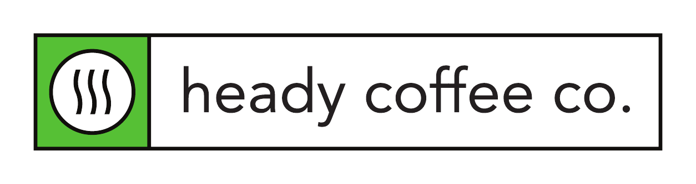
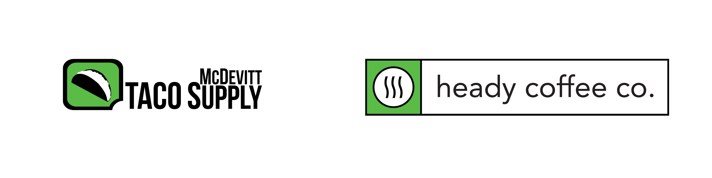
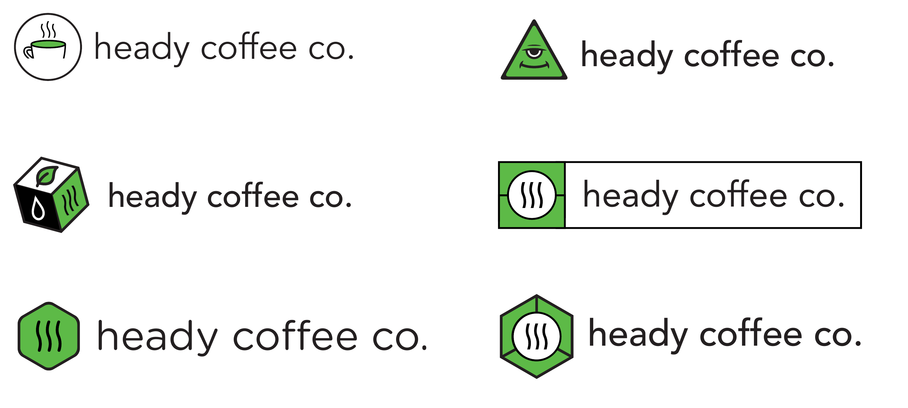
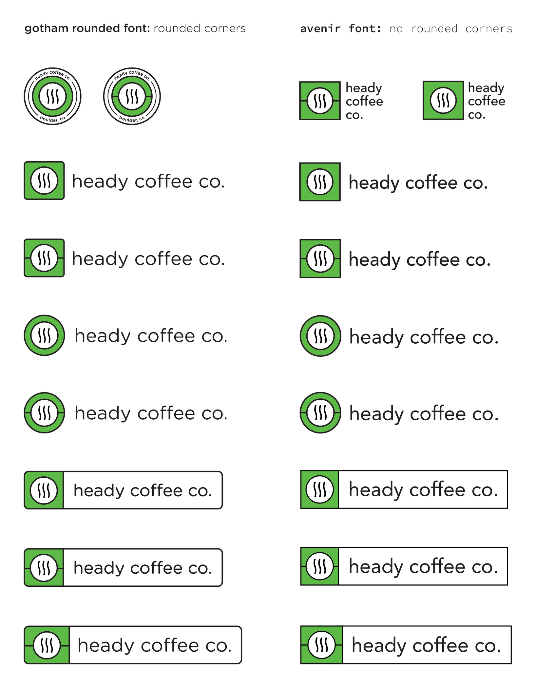

Heady Coffee Co.: A sibling, not a clone.
Heady Coffee Co. is a Boulder coffee shop and the sister company to McDevitt Taco Supply. That relationship was the whole brief: build Heady an identity that stands alone as a coffee brand, while anyone who knows the taco joint feels the family resemblance instantly. Less a blank-page logo, more a family portrait.
A new coffee brand, born into a family.
Heady needed its own identity: clearly a coffee brand, not a taco joint. But a customer who knew one had to feel the other in it right away. So the job was to design a sibling: find the shared features that make the two unmistakably related, then give Heady a personality of its own.
There was even a verbal thread to pull on. McDevitt's own menu sells "super heady tacos," so the name Heady Coffee Co. lets the two brands rhyme out loud, not just on the page.

The shared DNA
Step one was naming what makes McDevitt look like McDevitt. It came down to three genes, and Heady would inherit all of them. With the backbone settled, the only real question left was the symbol, and how to house it.
Electric green
The bright, almost electric green that makes both brands impossible to miss on a Boulder street.
Heavy black outline
A confident, consistent line weight that gives every mark the same sturdy, printed feel.
Icon in a block
One symbol living inside a strong container, the way McDevitt's taco sits in its chat-bubble block.
"Designing a sister brand is about resemblance, not repetition. Keep the bones, change the face."

From coffee cups to a third eye
I ran the symbol wide before narrowing: a literal cup of coffee; a to-go box with a leaf for something roastery and earthy; a hexagon for a badge-like, technical feel; even a calm third-eye face leaning into the double meaning of a heady aroma and a heady buzz.
The literal options were safe but forgettable. The punny ones were fun but pulled too far from the taco sibling. The winner was the quietest idea in the set: three rising waves of steam, the universal shorthand for a hot, fresh cup. It says coffee instantly, it nods to the word heady, the rising head off a fresh pour, and boxed in green it ties straight back to McDevitt.

Choosing the corners and the voice
Two typographic directions went head to head across the full lockup set. Gotham Rounded with rounded corners read softer and friendlier; Avenir with sharp corners felt cleaner and more grown-up, closer in posture to the McDevitt mark. Heady chose sharp: approachable, but composed.
From there the system built out: the icon as a standalone badge, a circle treatment, and the boxed lockup where the green block and wordmark share one outlined bar. Every variant holds the same green and the same line weight, so the brand stays recognizable at any size, on a cup, a window, a sign, or an app icon.

The connection is felt, not spelled out.
Set the two marks side by side and the relationship is obvious without a word of explanation. Heady gets a clear, confident coffee personality; McDevitt gets a sibling that strengthens the family instead of diluting it. That felt-but-unspoken connection is exactly what a sister brand should do.
- Resemblance, not repetition: three inherited genes (green, outline, icon-in-a-block) carried the family; everything else was Heady's own.
- The quietest idea won. Steam beat the clever options because it says the most with the least, and keeps saying it at 16 pixels.
- Built to last: a single-color-friendly mark and a small kit of lockups that covers nearly anywhere the brand needs to show up.
Want the longer version?
Happy to walk through the explorations that didn’t make it.